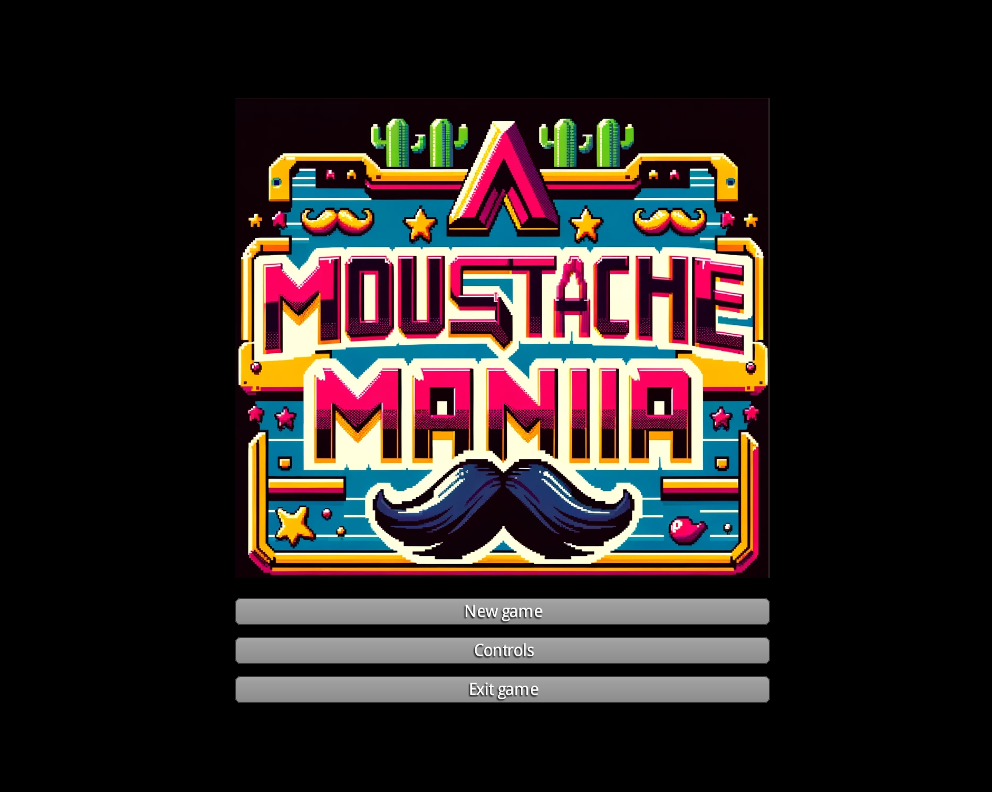

"Moustache Mania" er et spennende 2D plattformspill som ligner på klassikeren Super Mario. Her er en guide for hvordan du spiller spillet.
I "Moustache Mania" skal du navigere gjennom forskjellige nivåer, samle mynter, og bekjempe fiender. Målet er å nå slutten av hvert nivå uten å miste alle livene dine.
På hvert nivå finner du forskjellige samleobjekter som hjelper deg på reisen:
Pass på fiendene som prøver å stoppe deg. Du kan beseire dem ved å hoppe på dem eller bruke angrep.
Hvert nivå byr på nye utfordringer og farer. Utforsk nøye og finn alle hemmelighetene for å oppnå maksimal poengsum.
Her er noen tips for å mestre "Moustache Mania":
Vi håper du koser deg med å spille "Moustache Mania"! Lykke til!